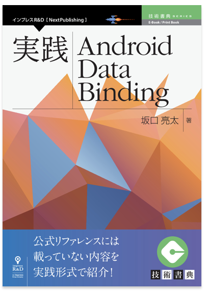

2018年の振り返りと2019年の目標
2018-12-31 21:52:48 +0900 JST
Categories: Poem
エンジニアとしての振り返り
大手SIerからhachidori株式会社というスタートアップに転職して1年を暮らしました。
転職したことを直接出会った人には伝えていたのですが、ブログやネットではほとんど書いていませんでした。
いい機会なのでこの場でいろいろ振り返ってみます。
開発リーダー
今年はアルバイトと店長が苦労するシフト調整を管理する「CAST」のiOS・Android開発を行っています。
2018年の前半まではiOSとAndroidの開発メンバーが私1人しかいなかったのですが、2018年後半にはメンバーが徐々に増え、私は開発iOSとAndroidリーダーとしてメンバーを管理する役割もやってきました。
コードレビューやタスクの調整、技術選定もしながら自分でコードも書くのを半年続け、最近ようやく体が慣れてきたかなと感じています。
技術書典4と5への参加
2018年の4月に技術書典4に参加しあまりの熱狂に、「こんなのがあるのか」とびっくりしたものです。そこから自分も本を出してみたいと思うようになり、AndroidのData Bindingをkotlinで解説した本を書こうと思いました。
そして技術書典5で初めてサークルとして応募し、初めて同人誌を出してみました。
現在まで書籍版が75部、DL版が20部ほど売れています。本当に感謝です。
関係ないですが、しがないラジオのep44でこのように発行部数や売り上げ部数を公開する文化はコミケにはあまりないらしいですね。なんでも情報共有したいと思っちゃうのはエンジニアの性ですね（笑）
商業誌
この技術書典5で出した本がなんと商業誌として発売されることになりました！
技術書典5の翌日、インプレスR&D様から技術書典を中心に商業出版を支援するNextPublishingの担当の方に声をかけていただき、さらに加筆を加えました。
名前を「実践 Android Data Binding」として12月から発売開始しました。みなさんぜひ買ってください！(ダイマ)
実践 Android Data Binding| 電子書籍とプリントオンデマンド（POD） | NextPublishing（ネクストパブリッシング）

正直いうとそんなに売れてないです（笑）
技術書典5で配布したVerで一通り欲しい人に行き渡ったような気がしています。
でもこの本は時間が経っても風化しないよう、これからData Bindingをはじめてみようという方にずっと参考になるように構成で考えましたので、継続して普及活動を行っていこうと思います。
LT発表
今までカンファレンスやイベントには聴衆側として情報収集を行っていましたが、12/25のクリスマスにぼっちのエンジニアが集まってLT会を開くという寂しい会で、初めてLTの登壇をしました。
2019年の目標
自分のブランディングとアウトプットをもっと発信していこうと思います。
あまり自分を表に出すような活動はこれまでしてこなかったのですが、リーダーとして1エンジニアとして自分のファンを増やしていきたいです。
- LT・勉強会も聞く側だけでなく発表する回数をどんどん増やしていく
- ブログもさぼらず書く
- 自分のファンを1人以上作る